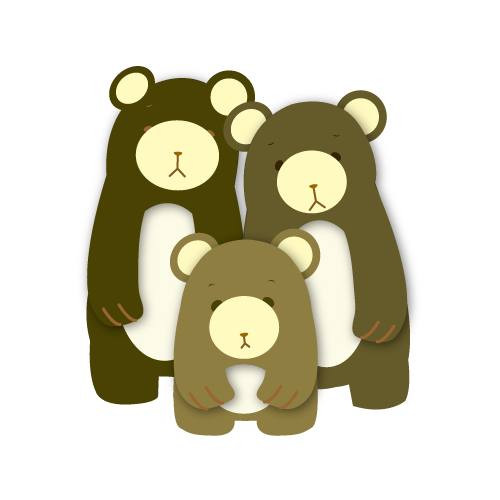
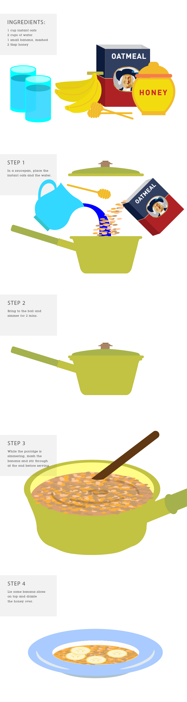
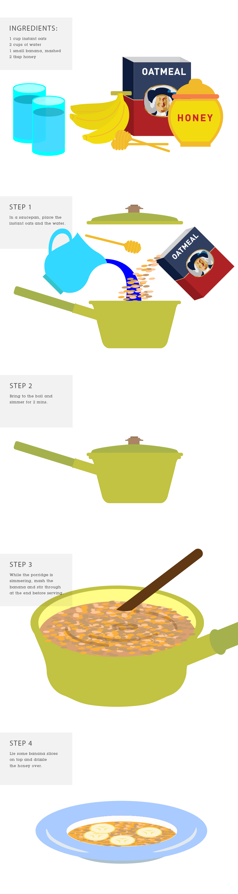

Three Bears' Porridge

Goldilocks and the three bears
A little girl named Goldilocks, goes for a walk in the forest and comes upon a house where she enters and finds to her delight three bowls of porridge. The first one she tastes is too hot, the next too cold but the third one just right so she eats it all up. Goldilocks finds the three different size chairs where she tries them out and finds the first one too hard, the next too soft, and then the little one just right but it breaks when she sits in it. As she wonders in the home she finds three beds and tries them out. The first bed is too hard, the next too soft but the third is just right and she curls up and falls asleep. Meanwhile the owners come home who happen to be three bears, Papa, Mama and little baby bear. Much to their demise they discover the outcome of what Goldilocks has done to their porridge, chairs and finally their beds. Goldilocks wakes with a fright when she sees and hears the bears; she jumps from the bed and runs away as fast as she can.
Let's some Porridge!
 
